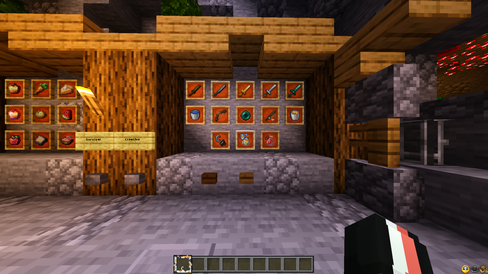
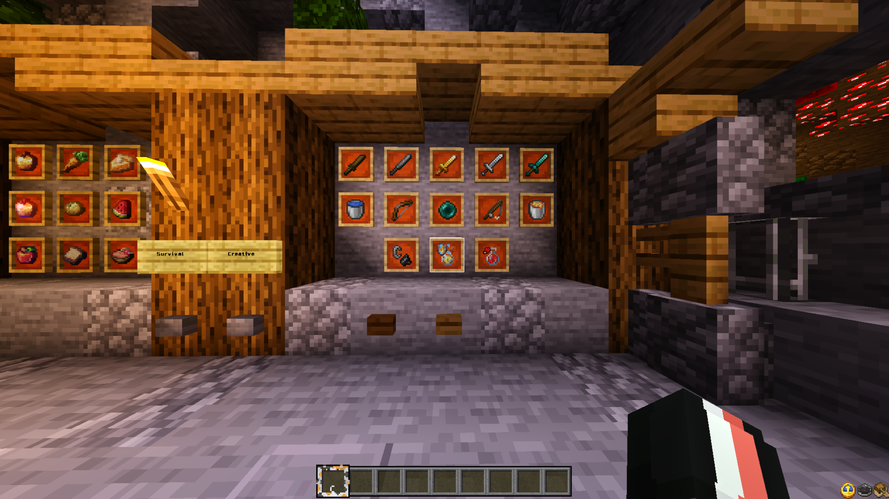
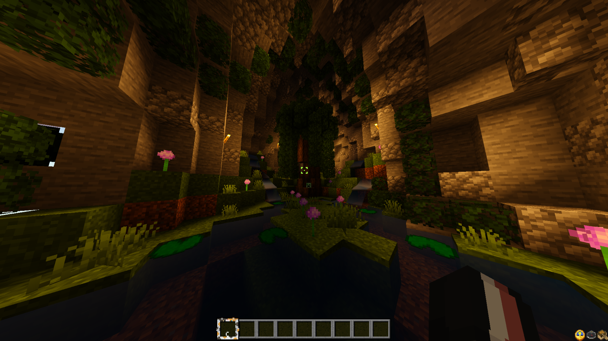
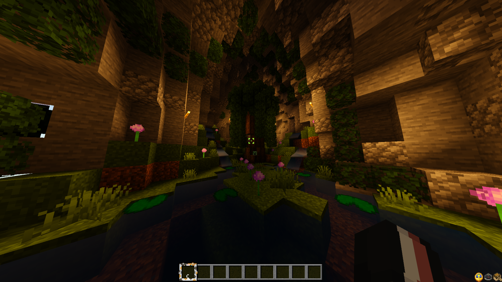
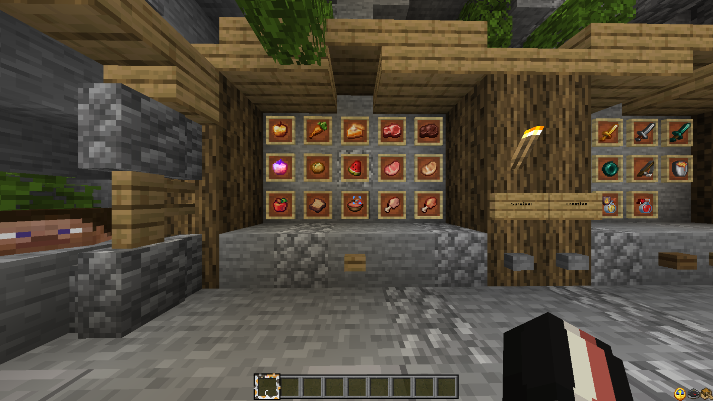
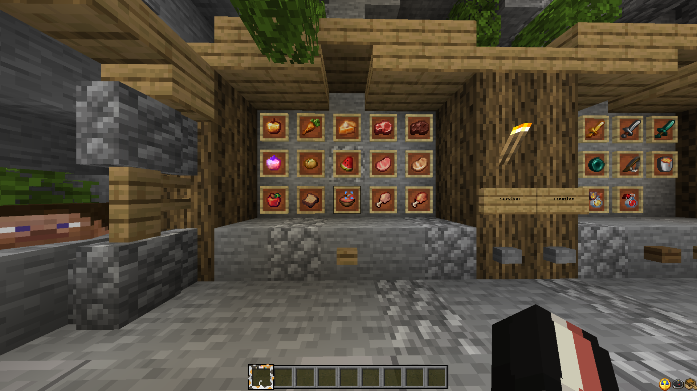

Esta textura es un nuevo cliente sencillo pero que agrega muchas cosas para que sea mas facil,
tambien agrega muchas cosas pero se sigue conservando la experiencia Vanilla.
Caracteristicas:
- Fuente de texto Personalizada
- Ver Saturacion de Comida
- Pinturas nuevas
- Sonidos Cambiados
- Guia de Pociones
- Hotbar de Gato
- Nuevos iconos de Pociones
- Fases de Destruccion cambiadas
- Sol y Luna realistas
- Diferenciar bloques infestados
- Bloques de tierra simples
- Efecto encantamiento RGB
- Calabaza transparente
- Ver tradeos
- Crafteo Rapido
- Huevos de Spawn cambiados
- Creeper y Allay, Maid
- Gatos Gordos
- Ver Arenas Sospechosas
- Redstone limpia
- Ver estado de Yunque
- Fuego reducido
- Minerales Bordeados
- Diferenciar tallo de Melon y Calabaza
- Ver Cultivos Listos
- Ver Efectos de Flechas y Pociones
- Ver fases del Arco y Ballesta
- Diferenciar discos
- Mejor Comida
- Variantes de Conejos
- Nuevas animaciones e interfaces
- Ver Durabilidad
- Ver Brujula, Compass y Brujula de Recuperacion
- Ver mano Izquierda
- Ver Vida de Otros Jugadores (Solo Jugadores, no otras entidades)
- Escudo Pequeño
- Armor Hud
- Nueva skin de Tanuki para Panda
- Mejores Arboles
- Shaders
Version con Shaders
Para usar los Shaders se necesita Better Render Dragon
 


 
Descargar Textura

Descargar Textura
 
